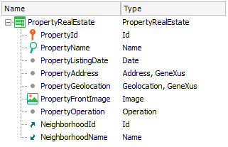

When business data is displayed on a Grid control, it is possible to present information in a clear way pursuant to criteria applied by developers based on the contents of the attributes and variables included in the Work With for Smart Devices object or Panel object. In order to achieve that aim exists the Data properties group.
| Property | Description |
| Orders property | Allows specifying the orders in which the information should be listed, grouping information according to a specific value (break by). |
| Search property | Defines filters for search (including advanced search) allowed in regards to the data. |
| Conditions property | Field (and section as well) for filtering data by conditions that can be used freely and independently from the interface. |
| Base Trn property | Specifies which Transactions will navigate the grid control. |
Consider PropertyRealState Transaction object to represent the properties handled by a real estate.

After applying Work With for Smart Devices pattern in this Transaction, GeneXus offers by default on the List node an order, search and filter conditions for the Grid control based on the types of attributes contained in the structure of the Transaction.
If you consider this default information offered by the pattern, you may conclude the following:
This example is available on RealEstate.